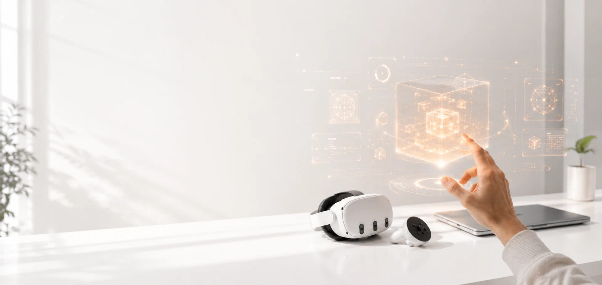

XR Developmentتطوير الواقع الممتد
Designing and developing immersive applications across AR, VR, and MR platforms.تصميم وتطوير تطبيقات غامرة عبر منصّات الواقع المعزّز والافتراضي والمختلط.

XR Developerمطوّرة واقع ممتد
I design and develop immersive XR applications that combine spatial computing, intelligent interaction, and human-centred design to solve real-world challenges. أصمّم وأطوّر تطبيقات واقع ممتد غامرة تجمع الحوسبة المكانية والتفاعل الذكي والتصميم المتمحور حول الإنسان لحلّ تحدّيات واقعية.
What I Buildما الذي أبنيه
Designing and developing immersive applications across AR, VR, and MR platforms.تصميم وتطوير تطبيقات غامرة عبر منصّات الواقع المعزّز والافتراضي والمختلط.
Creating intuitive interactions that connect physical environments with digital content.ابتكار تفاعلات بديهية تربط البيئات المادية بالمحتوى الرقمي.
Integrating AI and Computer Vision to build more adaptive and context-aware experiences.دمج الذكاء الاصطناعي ورؤية الحاسب لبناء تجارب أكثر تكيّفًا ووعيًا بالسياق.
Developing practical training, education, and simulation experiences for real use cases.تطوير تجارب تدريب وتعليم ومحاكاة عملية لحالات استخدام حقيقية.
Selected Workأعمال مختارة
About Meنبذة عني
I’m Bedour Alayyad, an XR Developer with a background in Computer Science and Artificial Intelligence. I focus on creating immersive applications across Mixed Reality, Virtual Reality, Augmented Reality, and Spatial Computing. أنا بدور العياد، مطوّرة واقع ممتد بخلفية في علوم الحاسب والذكاء الاصطناعي. أركّز على بناء تطبيقات غامرة عبر الواقع المختلط والافتراضي والمعزّز والحوسبة المكانية.
My work combines technical development, interactive design, and intelligent technologies to build practical experiences for training, education, and industry. I enjoy transforming ideas into complete XR prototypes, from interaction planning and interface design to implementation in Unity. يجمع عملي بين التطوير التقني والتصميم التفاعلي والتقنيات الذكية لبناء تجارب عملية للتدريب والتعليم والصناعة. وأستمتع بتحويل الأفكار إلى نماذج واقع ممتد متكاملة، من تخطيط التفاعل وتصميم الواجهة حتى التنفيذ في Unity.
Developing interactive AR, VR, and MR experiences using real-time 3D tools.تطوير تجارب تفاعلية بالواقع المعزّز والافتراضي والمختلط بأدوات ثلاثية الأبعاد آنية.
Exploring how Computer Vision and intelligent systems can enhance XR interaction.استكشاف كيف تُثري رؤية الحاسب والأنظمة الذكية التفاعل داخل الواقع الممتد.
Moving from concept and user flow to interface design, development, testing, and presentation.الانتقال من الفكرة ومسار المستخدم إلى تصميم الواجهة والتطوير والاختبار والعرض.
Technologiesالتقنيات
Foundationالأساس العلمي
2023 — 2024
Bahrain Polytechnicبوليتكنك البحرين
Research: Deepfake Face Images Detection. Focused on classifying real and synthetic facial images using deep learning models. البحث: كشف صور الوجوه المزيّفة. ركّز على تصنيف الصور الحقيقية والمُصطنعة باستخدام نماذج التعلّم العميق.
2017 — 2021
Shaqra Universityجامعة شقراء
XR Trainingتدريب الواقع الممتد
AR/VR Bootcamp — Saudi Digital Academy
XR Bootcamp — Tuwaiq Academy
معسكر الواقع المعزّز والافتراضي — الأكاديمية السعودية الرقمية
معسكر الواقع الممتد — أكاديمية طويق
I’m open to XR opportunities, collaborations, and projects across immersive technology, training, education, and industry. أرحّب بفرص الواقع الممتد والتعاون والمشاريع في التقنيات الغامرة والتدريب والتعليم والصناعة.